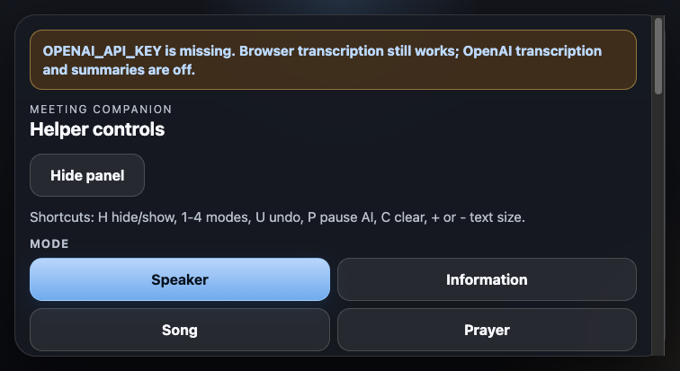

Start here
- Run
npm installonce. - Run
npm start. - Open
http://localhost:3000on the laptop. - Press H to hide or show the helper panel on demand.
- Use manual lines first if the room is noisy or speech recognition is unreliable.
Sunday use
Modes
- Speaker for stories, teaching, feelings, invitations, and examples.
- Information for exact dates, times, places, hymn numbers, assignments, and announcements.
- Song for hymn or song status only.
- Prayer for prayer status only, not line-by-line prayer text.
Viewer controls
- Text size changes how large the TV text appears.
- Margins changes how tight the lines sit on the screen.
- Update interval slows down or speeds up AI summaries.
Keyboard shortcuts
- H hide or show the helper panel
- 1 speaker mode
- 2 information mode
- 3 song mode
- 4 prayer mode
- U undo the last line
- C clear all lines
- P pause or resume AI
- + bigger text
- - smaller text
Screenshot

OPENAI_API_KEY is missing.
Accessibility
- The TV display stays at five lines only.
- The helper panel can be hidden with H.
- Manual lines appear immediately and do not wait on AI.
- No audio or transcript is saved by default.